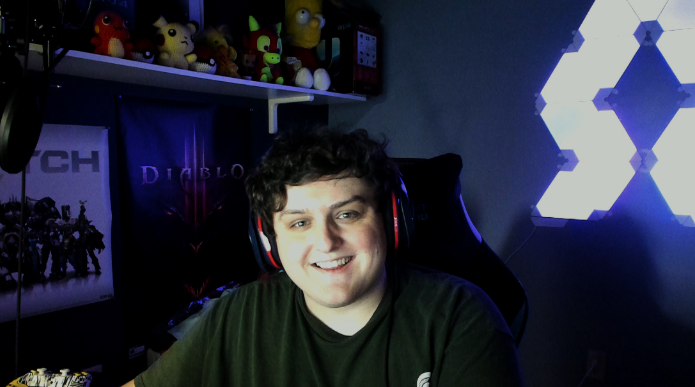

Hey All! My name is Nathan Davis and I am a Senior at Michigan State University in the college of Communication Arts and Sciences pursuing a Bachelor of Arts Degree in Media and Information with a concentration in Film and Media Production.
I was raised in East Lansing and have wanted to be a Spartan since I was a little kid. My biggest passion is video games, more specifically following and participating in the world of Esports.
Over my tenure here at MSU, I have played on two of our Esports teams, MSU Spartans White and MSU Invictus White. The respective games for each team were Counter-Strike: Global Offensive and Tom Clancy's Rainbow Six Seige.
The main page of this website is to showcase the two sides of me. The first side is a showcase of my technical skill that I have acquired over my tenure at MSU. As stated in my about me, I have studied extensively and diversely throughout the College of Communications in different forms of media. This has given me access and practice with many of the top tools used in the media industry like programs included in the Adobe Suite, top 3d modeling programs like Maya and Blender, and film studio programs such as Houdini and Davinci Resolve. I like to practice these programs in my free time to hone my skills and hopefully become a competitive player in the job market one day. The projects section on the main page of this website is some of the work that I am really proud of. There's not a lot but I'm still a novice at this point.
The second part of me is what I am passionate about outside of school which is gaming. More specifically gaming and entertainment through livestreaming. As stated in my bio, I have played multiple different Esports for MSU. I consider myself an above-average player and like to showcase my skills live on a website called Twitch. I have included a video on one of my greatest achievements while gaming which is a speedrun of a game called Jump King in which the result time puts me at one of the top 200 runners in the world!